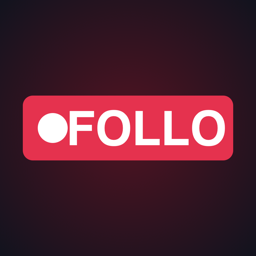

FolloПолітика конфіденційності
Діє з 16 листопада 2026 року (попередня редакція — 28 жовтня 2026). Розробник: Богдан Лойко (фізична особа), контакт: bohdan.loiko@gmail.com.
Коротко
Follo не має власних серверів і не збирає ваших даних. Усе, що застосунок зберігає, лежить лише на вашому iPhone. Відео йде напряму з телефона у ваш YouTube-канал.
Підключення YouTube
Follo використовує YouTube API Services. Коли ви підключаєте YouTube, Google видає застосунку токен доступу до вашого каналу. Follo використовує його лише щоб:
- створювати, запускати й завершувати трансляції на вашому каналі, ставити їм назву й приватність, які ви вибрали, та отримувати для них ключ потоку;
- перевіряти стан трансляції (чи бачить YouTube відео);
- ставити заставку трансляції, яку Follo малює з назв та емблем команд;
- показувати назву й аватарку вашого каналу в застосунку та список ваших запланованих трансляцій;
- видаляти трансляції, які Follo сам створив для матчу і які так і не вийшли в ефір.
Токен зберігається лише на вашому телефоні, у захищеному сховищі iOS (Keychain), і нікуди не передається, крім Google. Назва й аватарка каналу зберігаються на телефоні, щоб показувати їх без інтернету.
Користуючись цими функціями, ви погоджуєтесь з Умовами використання YouTube. Як Google обробляє дані, описано в Політиці конфіденційності Google.
Як відкликати доступ і видалити дані
- У Follo: торкніться назви каналу на головному екрані → «Відключити YouTube». Follo відкликає токен у Google і стирає з телефона його, дані каналу й підготовлену трансляцію.
- У Google: сторінка дозволів сторонніх застосунків → Follo → «Видалити доступ».
- Видалення Follo з телефона стирає все, що застосунок зберігав.
Дані Google: зберігання, передача, обмеження
- Що Follo отримує від Google: токен доступу, назву й аватарку каналу, а також ID, назви, стан і налаштування трансляцій, які Follo створює чи показує вам.
- Де зберігається: лише на вашому iPhone. Токен — у Keychain; назва й аватарка каналу оновлюються з Google під час кожного запуску; ID і посилання підготовленої трансляції зберігаються, доки трансляція не завершиться або ви не відключите YouTube. Розробник цих даних не отримує: у Follo немає серверів.
- Кому передається: нікому, крім самого Google (YouTube API). Дані не продаються, не використовуються для реклами й не використовуються для навчання моделей штучного інтелекту.
- Видалення: «Відключити YouTube» або видалення застосунку стирає ці дані з телефона одразу. Якщо ви відкликали доступ на сторінці Google, Follo стирає токен і дані каналу, щойно наступного разу спробує оновити доступ (під час запуску чи роботи); посилання на вже підготовлений матч лишається, щоб ви могли ввійти знову до початку, — приберіть його кнопкою «Прибрати посилання» або «Відключити YouTube». Самі трансляції лишаються на вашому YouTube-каналі; видалити їх можна в YouTube Studio.
- Використання Follo інформації, отриманої з API Google, відповідає Google API Services User Data Policy, зокрема вимогам Limited Use.
Камера, мікрофон, фото, файли
Камера й мікрофон потрібні для трансляції; відео й звук ідуть лише у вашу трансляцію YouTube і, якщо ви ввімкнули «Запис на телефон», у файл на вашому телефоні. Доступ до фото — лише щоб ви могли вибрати емблему клубу; вибрані зображення зберігаються в застосунку на телефоні. Файли ліг (.follo) та відео-переходи зберігаються на телефоні.
Журнал роботи (лог)
Follo пише технічний журнал трансляції (якість, розриви, нагрів) у файл на телефоні. Він не містить токенів чи паролів, але містить назви й ID ваших трансляцій. Сам він нікуди не надсилається. Ви можете переслати його розробнику вручну: Налаштування → «Надіслати лог розробнику».
Аналітика, реклама, діти
Follo не містить аналітики, реклами, трекерів чи сторонніх SDK. Застосунок не призначений для самостійного використання дітьми; відповідальність за згоду людей, яких знімають (зокрема батьків неповнолітніх гравців), лежить на організаторі трансляції.
Зміни
Про зміни цієї політики повідомимо на цій сторінці зі зміненою датою вгорі. Питання — bohdan.loiko@gmail.com.
Privacy Policy
Effective 16 November 2026 (previous version: 28 October 2026). Developer: Bohdan Loiko (individual), contact: bohdan.loiko@gmail.com.
In short
Follo has no servers of its own and collects no data about you. Everything the app stores stays on your iPhone. Video goes straight from the phone to your YouTube channel.
Connecting YouTube
Follo uses YouTube API Services. When you connect YouTube, Google gives the app an access token for your channel. Follo uses it only to:
- create, start and end broadcasts on your channel, set the title and privacy you chose, and get their stream key;
- check the broadcast's status (whether YouTube receives video);
- set the broadcast's thumbnail, drawn by Follo from the team names and crests;
- show your channel's name and picture in the app and list your scheduled broadcasts;
- delete broadcasts that Follo itself created for a match and that never went live.
The token is stored only on your phone, in the iOS Keychain, and is sent nowhere but to Google. The channel's name and picture are kept on the phone so they show offline.
By using these features you agree to the YouTube Terms of Service. How Google handles data is described in the Google Privacy Policy.
Revoking access and deleting data
- In Follo: tap the channel name on the home screen → “Disconnect YouTube”. Follo revokes the token at Google and erases it, the channel data and the prepared broadcast from the phone.
- At Google: third-party app permissions → Follo → “Remove access”.
- Deleting Follo from the phone erases everything the app stored.
Google user data: storage, sharing, limits
- What Follo receives from Google: an access token, your channel's name and picture, and the IDs, titles, status and settings of the broadcasts Follo creates or shows you.
- Where it is stored: only on your iPhone. The token is in the iOS Keychain; the channel's name and picture are refreshed from Google at every launch; the ID and link of a prepared broadcast are kept until that broadcast ends or you disconnect YouTube. The developer never receives this data: Follo has no servers.
- Who it is shared with: nobody but Google itself (the YouTube API). The data is not sold, not used for advertising and not used to train artificial intelligence or machine learning models.
- Deletion: “Disconnect YouTube” or deleting the app erases this data from the phone at once. If you remove access on Google's page instead, Follo erases the token and channel data the next time it tries to renew access (at launch or while in use); the link of an already prepared match stays so you can sign in again before kick-off — remove it with “Remove the link” or “Disconnect YouTube”. The broadcasts themselves stay on your YouTube channel; you can delete them in YouTube Studio.
- Follo's use and transfer of information received from Google APIs adheres to the Google API Services User Data Policy, including the Limited Use requirements.
Camera, microphone, photos, files
The camera and microphone are used for the broadcast; video and sound go only to your YouTube broadcast and, if you turned on “Recording on the phone”, to a file on your phone. Photo access is used only to let you pick a club crest; chosen images are stored in the app on the phone. League files (.follo) and video transitions are stored on the phone.
Log
Follo writes a technical log of the broadcast (quality, drops, heat) to a file on the phone. It contains no tokens or passwords, but it does contain the titles and IDs of your broadcasts. It is never sent on its own. You can forward it to the developer yourself: Settings → “Send the log to the developer”.
Analytics, ads, children
Follo contains no analytics, ads, trackers or third-party SDKs. The app is not intended for use by children on their own; the broadcast's organiser is responsible for the consent of the people filmed, including the parents of minor players.
Changes
Changes to this policy will be posted on this page with a new date at the top. Questions: bohdan.loiko@gmail.com.